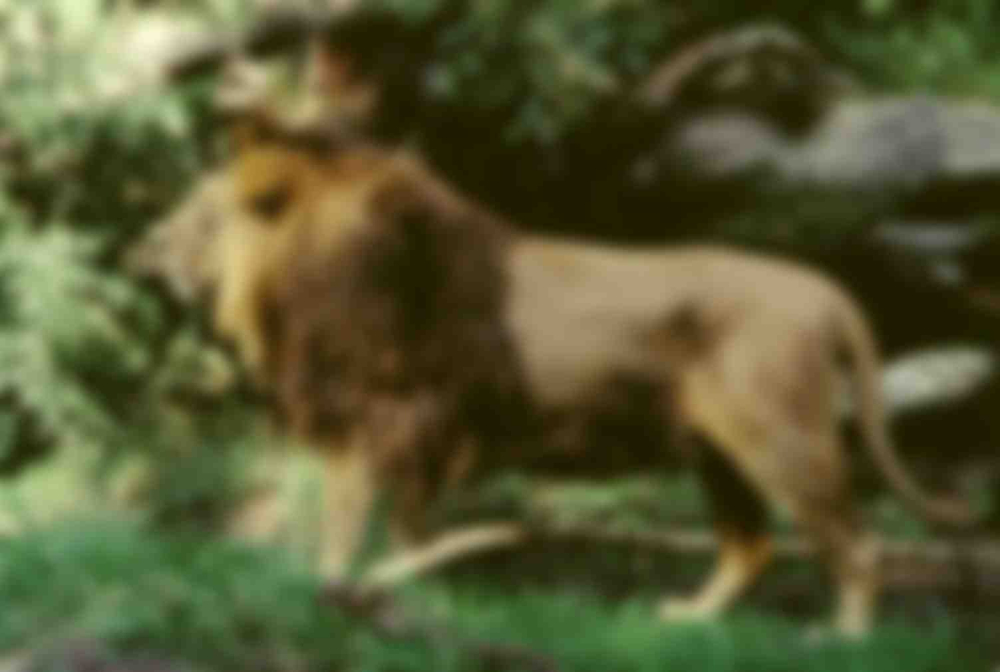
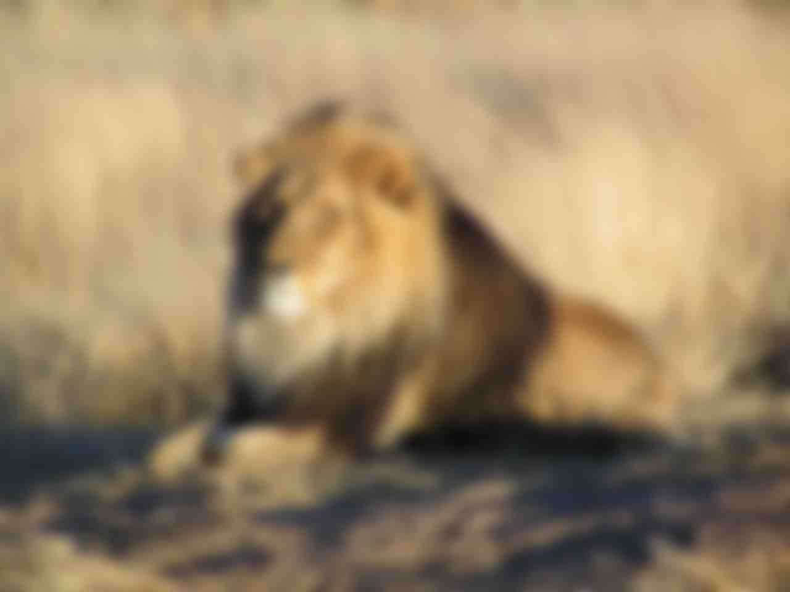
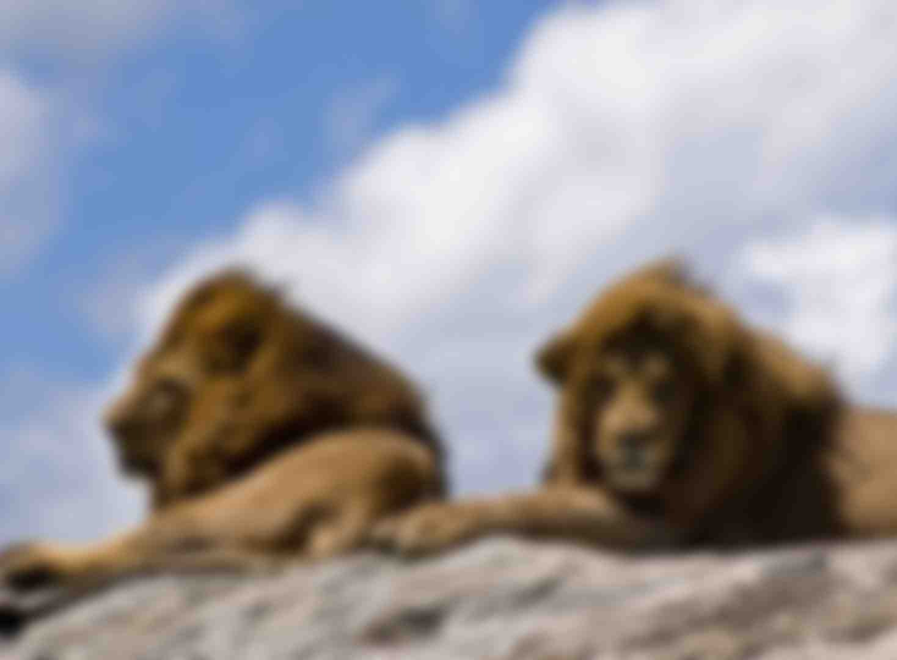
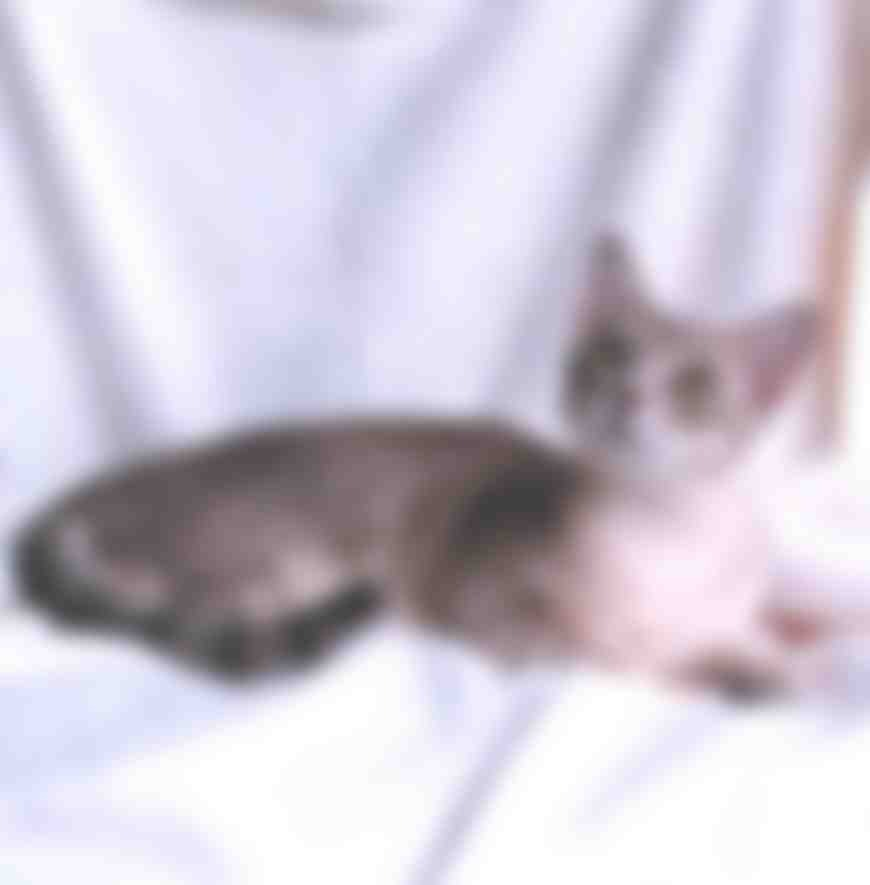
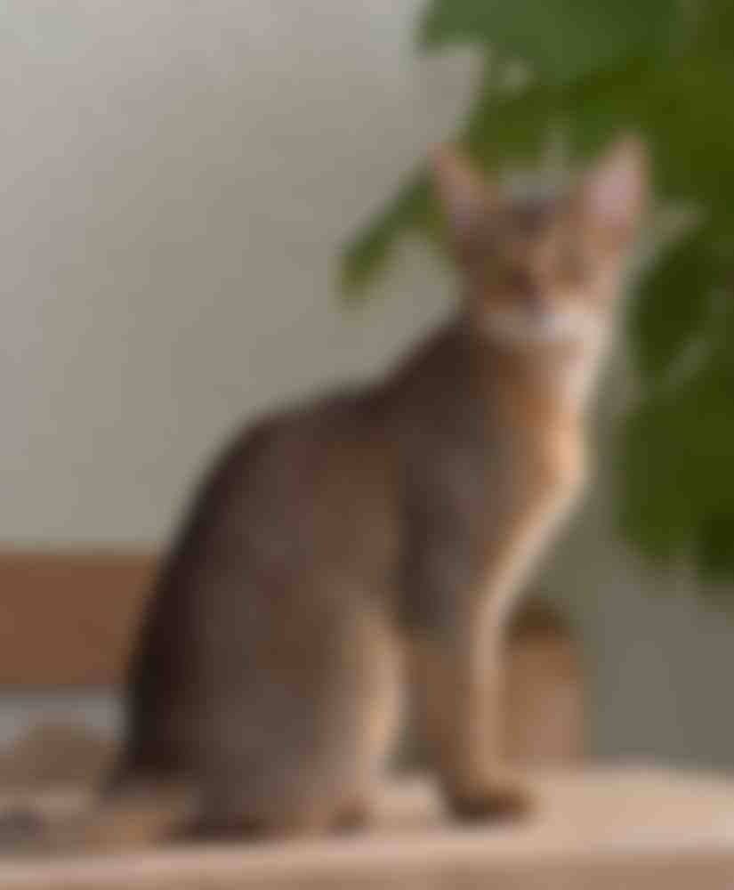

Львы населяют в основном саванны, но иногда могут перебираться в кустарниковую местность или лес. В отличие от других кошачьих, они живут не поодиночке, а в особых семейных группах — прайдах. Прайд обычно состоит из родственных самок, потомства и нескольких взрослых самцов. Самки охотятся вместе, в большинстве случаев на крупных копытных. Львы не охотятся на людей целенаправленно, но случаи людоедства наблюдаются очень часто. Львы — сверххищники, то есть занимают верхнее положение в пищевой цепи.
Внешний вид льва очень своеобразен. Это один из немногих хищников с ярко выраженным половым диморфизмом. Самцы не только значительно крупнее самок, но и обладают гривой, которая у некоторых подвидов достигает большого развития и покрывает плечи, часть спины и грудь. Окраска льва жёлто-серая с различными оттенками, грива часто того же цвета, что и шкура, но бывает тёмная, даже чёрная. Подвиды льва определяются в значительной степени по цвету гривы. За исключением гривы, шерсть на теле зверя короткая, лишь на конце хвоста есть кисточка длинных волос.
В природе львы живут от десяти до четырнадцати лет, в неволе могут жить дольше двадцати лет. Самцы, как правило, редко проживают больше десяти лет. Происходит это потому, что драки с другими львами сильно снижают продолжительность их жизни.
 согласно генетическому исследованию аутосомных маркеров и митохондриальной ДНК 979 домашних, диких и одичавших кошек с трёх континентов, в том числе барханных кошек (Felis margarita), все домашние кошки по материнской линии происходят как минимум от пяти представительниц подвида степная кошка (Felis silvestris lybica), имеющих разные гаплотипы митохондриальной ДНК. В митохондриальной гаплогруппе IV, специфической для ближневосточных и домашних кошек, идентифицировали 6 субклад и рассчитали время жизни общего предка — ок. 13 тыс. лет назад, что значительно превышает время предполагаемого одомашнивания ближневосточных кошек[31][32]. Генетический анализ митохондриальной ДНК 209 кошек из 30 захоронений на территории Европы, Ближнего Востока и Северной Африки показал, что домашние кошки распространялись по миру двумя большими волнами. Первая волна имела место на заре сельского хозяйства 12—9 тыс. лет назад — в Плодородном полумесяце и его окрестностях домашние кошки расселились вместе с земледельцами по всему Ближнему Востоку. Несколько тысяч лет спустя вторая волна, вышедшая из Египта, охватила практически всю Европу и Северную Африку[33][34][35].
 